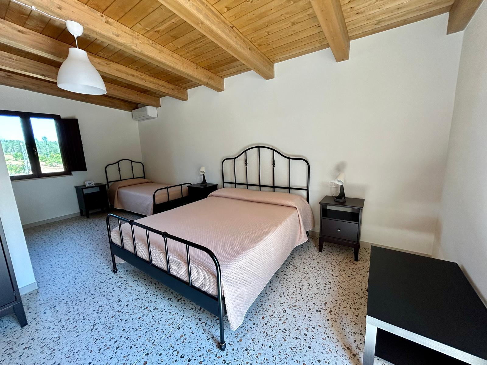
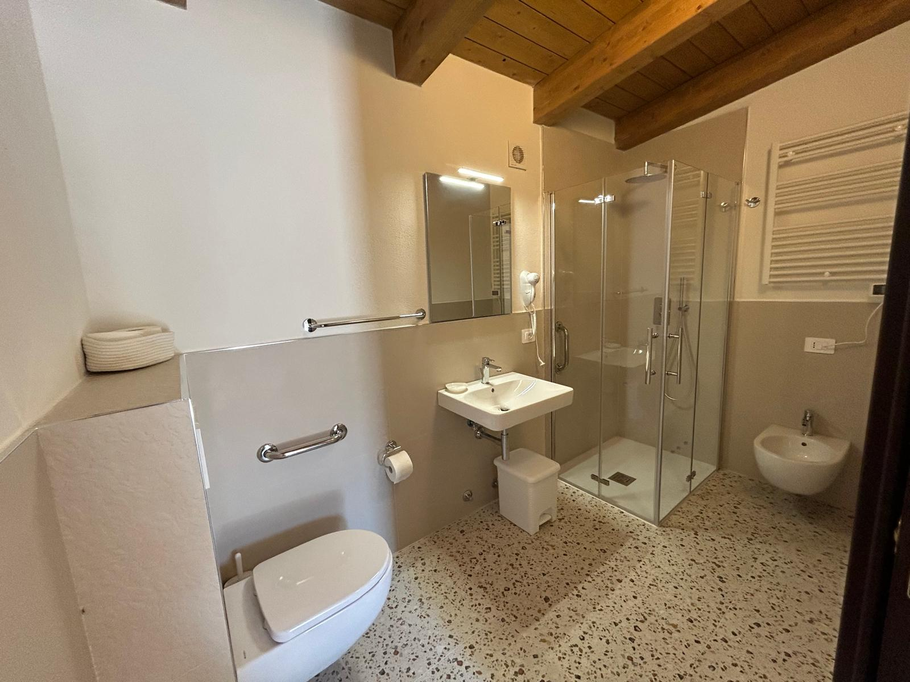

Il dolce
riposare.
Aprire la porta, trovare il verde. Otto camere con ingresso indipendente e il piacere semplice di sentirsi a casa.
Scopri
Uno spazio
tutto tuo.
Per scegliere la camera accessibile più adatta alle tue esigenze, descrivici ciò di cui hai bisogno prima di prenotare.


La semplicità
del comfort.
- Bagno privato, doccia e asciugacapelli
- Climatizzazione e riscaldamento autonomo
- TV, Wi-Fi e mini frigo
- Biancheria e riassetto quotidiano
- Parcheggio privato
- Giardino e solarium
- Culla e seggiolone su richiesta
- Spazi gioco per bambini
Per chi viaggia in bicicletta sono disponibili deposito sicuro e ciclo-officina.
Viaggiare in bici Camere e servizi ↗
Le cose
da sapere.
Torte, pane, confetture e succhi accompagnano il risveglio. Culla su richiesta: € 10 al giorno. Sono disponibili proposte con pernottamento, colazione o mezza pensione.
Tariffe delle camere · listino 2026
Tariffe a partire da, per camera e notte, solo pernottamento. La disponibilità e il preventivo si verificano al momento della prenotazione.
| Periodo | Singola | Doppia | Tripla | Quadrupla |
|---|---|---|---|---|
| Gen–Apr / Ott–Dic | € 35 | € 55 | € 80 | € 100 |
| Mag–Giu / Set | € 50 | € 80 | € 110 | € 135 |
| Lug–Ago / festività | € 70 | € 110 | € 155 | € 200 |
Conferma e cancellazioni
La conferma prevede un acconto del 30% entro tre giorni lavorativi. Il saldo è previsto il giorno prima della partenza.
Le penali aumentano avvicinandosi all’arrivo: 10% fino a 20 giorni prima, 30% tra 19 e 10, 50% tra 9 e 5, 100% da 4 giorni. La partenza anticipata non prevede rimborso. Prima di confermare, consulta le condizioni complete e chiedi il preventivo per le tue date.
Condizioni complete del soggiorno ↗Esigenze particolari
Per accessibilità, alimentazione, arrivi fuori orario o soggiorni con animali, contattaci prima di prenotare: ti daremo indicazioni specifiche per la tua visita.
Scegli il tuo
ritmo.
Una vacanza in famiglia, una sosta in bicicletta, un fine settimana tra sapori e territorio. Esplora le proposte e chiedici quali sono disponibili nelle tue date.
Proposte di soggiorno